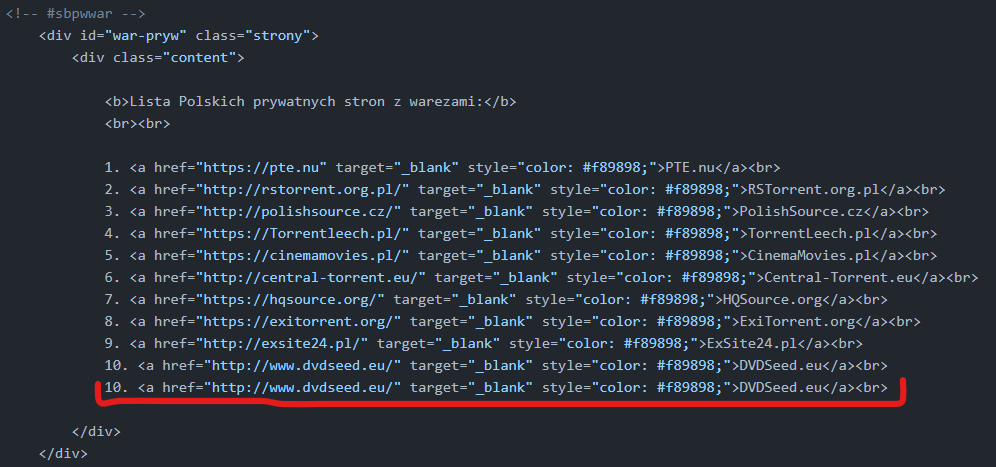
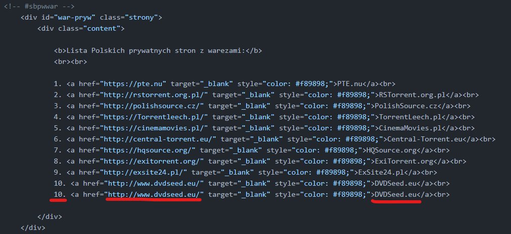
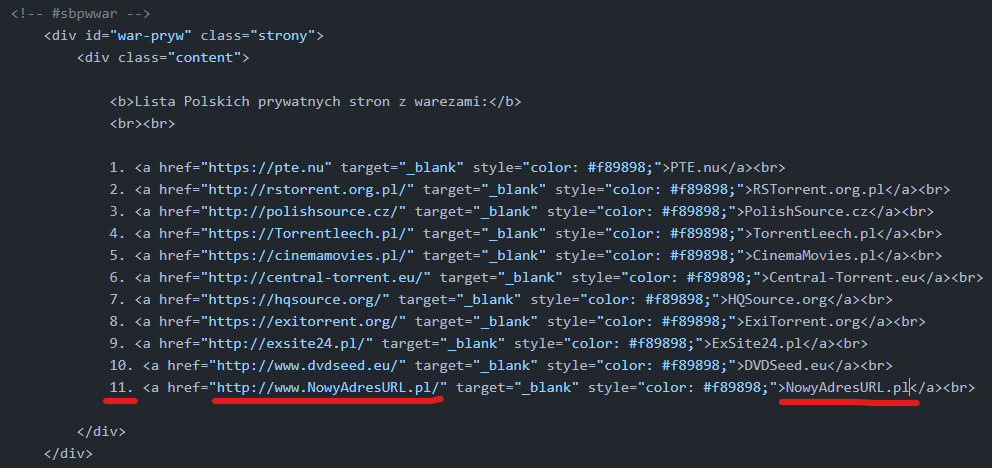

jeżeli znajdziemy juz dany spis, według wcześniejszych instrukcji, powinniśmy zobaczyć coś takiego:

gdy już udało nam się znaleźć interesujący nas spis i widzimy to co powyżej (albo coś podobnego), musimy ostatnią linijkę, czyli w naszym przypadku podpunkt 10. cały zaznaczyć i skopiować a następnie wkleić go jako następny, całość powinna wyglądać tak:
następnie edytujemy informacje zaznaczone na zdjęciu:
całość po edycji powinna wyglądać tak:
pamiętajcie, w 3 polu adres ma NIE zawierać przedrostka http:// ani https:// te przedrostki mają znajdować się jedynie w polu 2. Jeżeli zmieniliście wszystko tak jak w tym poradniku, możecie przejść do zapisu, ta część była jasno opisana tu: Link